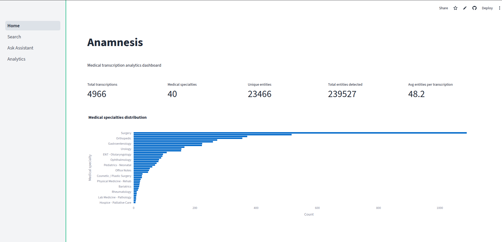

Pipeline
1
Clinical Text
Medical transcription dataset
2
NER Extraction
Biomedical transformers
3
Embeddings
Semantic similarity search
4
Analytics
Entity insights dashboard
Capabilities
- Biomedical Named Entity Recognition
- Medical entity normalization
- Semantic vector search
- Retrieval Augmented Generation
- Clinical data analytics
- Batch NLP processing
Tech Stack
NLP
Transformers • HuggingFace
Backend
Python • Pandas • NumPy
Data Engineering
Vector embeddings • SQL
Tools
Git • Streamlit • Linux